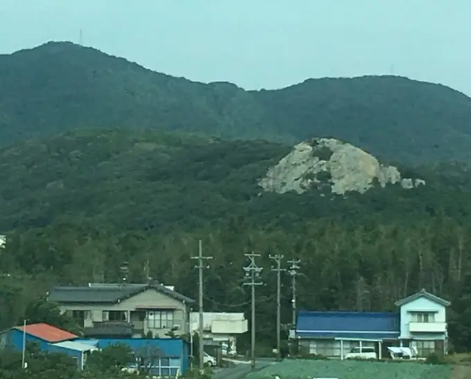
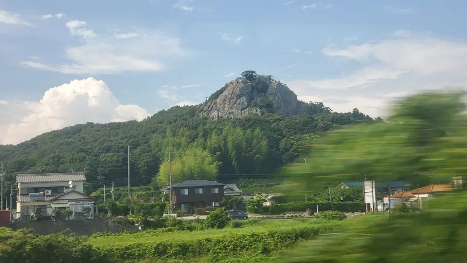

- 見える区間
- 浜松 → 豊橋
- 座席側
- E席・山側
- タイミング
- 東京発のぞみ基準で約75分後
- 写真
- 3 枚
新幹線から見える大きな岩は何？
東京から新大阪方面へ向かう新幹線では、浜名湖を過ぎ、新所原付近から豊橋へ入るころにE席側を見てください。林に覆われた低い丘の上から、縦に切り立った灰色の岩壁が突然現れます。豊橋市雲谷町の通称「立岩」で、遠くからでも輪郭が際立つため、「あの岩は何？」と気になりやすい車窓です。
もっと見る: 石神・磐座・奇岩研究: 立岩（愛知県豊橋市）豊橋市: 立岩の利用について青雲のこころざし: 誰もが気になる立岩神秘と感動の絶景を探し歩いて: 豊橋市の立岩デイリーポータルZ: 東海道本線の車窓から見える岩めぐり
東京から新大阪方面へ向かう場合は、浜松 → 豊橋が近づいたらE席・山側の窓を少し早めに見てください。新大阪から東京方面へ向かう場合は、通過順が逆になります。
立岩はどんな岩？
立岩は標高約88mの岩山の通称です。南側にはチャート質の岩肌が最大約30m切り立ち、周囲の林から岩壁だけが大きく露出しています。この形が、高速で通過する新幹線からでも目に入りやすい理由です。
麓には立岩稲荷があります。ただし、立岩と信仰の直接的な関係を示す確かな資料は確認されておらず、御神体や磐座と断定するのは避けたほうがよさそうです。
現地はロッククライミングでも知られます。豊橋市は利用方法を愛知県東三河遭難対策協議会へ案内しており、現地案内では岩登りに申請が必要とされています。車窓で見る岩と、現地で登る岩では前提が異なります。
位置の目安
地図をひらくスポット位置と、新幹線から見る位置を切り替えられます。
豊橋の立岩を見逃さないコツ
1. 先に見る方向を決める
浜松 → 豊橋が近づいたら、E席・山側の窓を先に意識してください。現在地から追う場合はライブガイド、事前に確認する場合はこのページの地図が役立ちます。
はっきり見えるのは数秒ほど。案内が出てからカメラを探すより、先に座席側と窓の方向を決めておくと拾いやすくなります。
2. 見どころ
林の輪郭から岩壁だけが縦に突き出す、不自然なほど強いシルエットが見どころです。『あれは何？』と思った瞬間に見失いやすいので、浜名湖を過ぎたら先にE席側へ目を向けてください。
写真で見る豊橋の立岩


 関連
セロテープの壁看板
関連
セロテープの壁看板
 関連
しっぺいの応援看板
関連
しっぺいの応援看板
 関連
岐阜城
関連
岐阜城